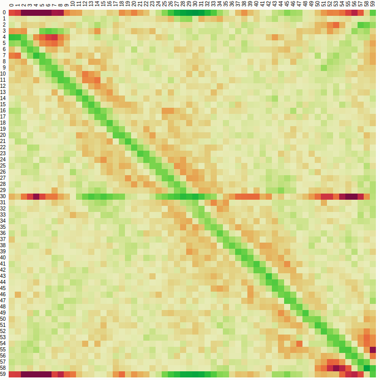
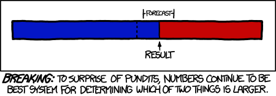

Of course they're more likely to occur when you're near your home, because you're most likely to be driving there!
However, turns out that there is some edge there even after correcting for time spent driving near home / away.
The close to home effect in road crashes
Roads within 11 km (6.8 miles) of home accounted for half of all travel and 62% of all crashes. The ‘close to home’ effect held for male and female drivers. Novice (learner) drivers were the only demographic subgroup to not exhibit the close to home effect. Compared with crashes further away, crashes close to home were more likely to involve alcohol and diverted attention, and less likely to involve driver fatigue.
https://www.sciencedirect.com/science/article/pii/S092575351730783X
Scalable to m factors in n dimensional space too.
Great explanation in Numerical Recipes Chapter 15 showing that least-squares fit is the Maximum Likelihood Estimator if the measurement errors are independent and normally distributed.
Gilbert Strang has a few different derivations of it in http://math.mit.edu/~gs/linearalgebra/ila0403.pdf, but I liked the calculus way best.
Peter Norvig talks about some shuffling algorithms in his Udacity CS212 class.
Notes from Shuffling#Shuffling_algorithms
To keep it in O(1) space, you swap the i'th selection with the n-i'th card at the end of the deck. There's some more optimizations too…here
<My first thought for a method>. Best case O(n log n) for sorting??? What about radix sort (O(N))?
There are a lot of ways to do it! Shuffling#Research, particularly the evaluation methods.
(my naive thought). Copied from Mike Bostocks. 
| 1 | 2 | 3 | |
| A | |||
| B | |||
| C |
(For small numbers of cards). Coding Horror and Norvig do it this way.
| ABC | ACB | BAC | BCA | CAB | CBA |
|---|---|---|---|---|---|
| .166 | .166 | .166 | .166 | .166 | .166 |
For 3 cards, there are 3! permutations, or 6. The previous method has 9 boxes though…??!!
Dad's method.
?!?!?!? Wow cool
A similar problem is fading in a random way and not repeating any pixels along the way.
http://fabiensanglard.net/fizzlefade/index.php, uses a funky thing that only takes 16 bits for 64K pixels.
Another method using a Feistel network, which generalizes better. http://antirez.com/news/113
Original hacker news article: https://news.ycombinator.com/item?id=15122540
Simplified to coin flipping…sorta. Inspired by xkcd 1131: 
Check out Statistics done Wrong, but maybe try it on your own first…
0 0 1 1 0 1 0 0 0 0 1 0 1 0 0 1 0 0 1 1 0 1 0 0 0 0 1 0 0 1 0 1 0 0 0 1 0 1 1 0 1 0 0 1 0 1 0 1
and:
0 1 0 1 0 1 0 1 0 1 0 1 0 1 0 1 0 1 0 1 0 1 0 1 0 1 0 1 0 1 0 1 0 1 0 1 0 1 0 1 0 1 0 1 0 1 0 1
and:
0 0 0 0 1 1 1 1 0 0 0 0 1 1 1 1 0 0 0 0 1 1 1 1 0 0 0 0 1 1 1 1 0 0 0 0 1 1 1 1 0 0 0 0 1 1 1 1
{kind=link}
{kind=link}